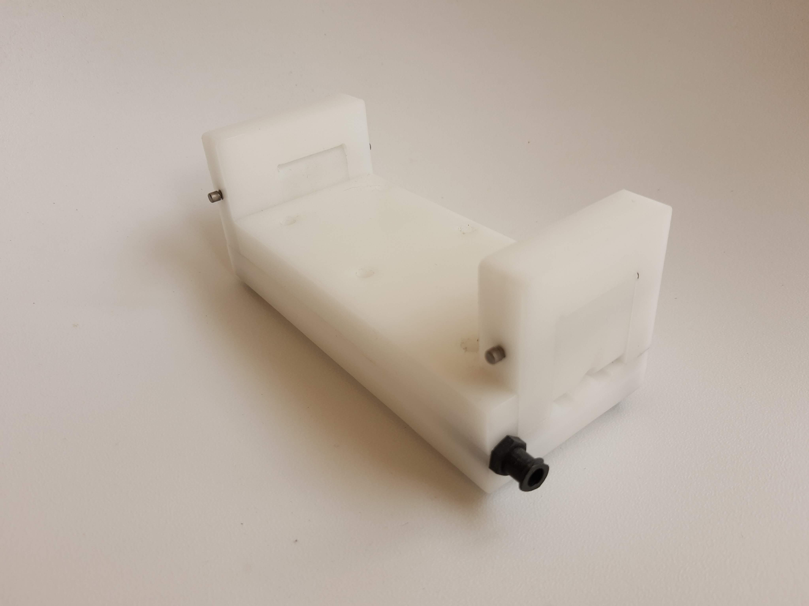

Microscope Objective Heater

This was a heating element I made to wrap around a microscope objective lens. When doing oil immersion microscopy it’s important to keep the temperature differential between the petri dish and the objective as minute as possible, which is the purpose of this heating element. The element needed to be highly flexible to wrap around the objective of a microscope. I decided to go with a flexible Kapton PCB with a silicone overmold. The mold I designed and machined used a swiveling clamp arm to hold the PCB in place as well as provide some tension to the board during molding. The top portion of the mold locked the arms in place and sealed the mold. The silicone was mixed then vacuum degassed before being feed into the mold. I ran a channel from the top to the bottom of the mold to keep air from getting trapped.
When I designed this, the FreeCAD path workbench used to generate g-code for the CNC wasn’t very powerful and could only do very simple operations. Because of how the arms swing down to tension the PCB I needed to do a cone shaped operation where the cable comes out of the mold. This wasn’t possible in FreeCAD so I made a simple program to generate the shape that I wanted.
The holes in the PCB are to let silicone flow through the PCB so it is one continuous piece. 